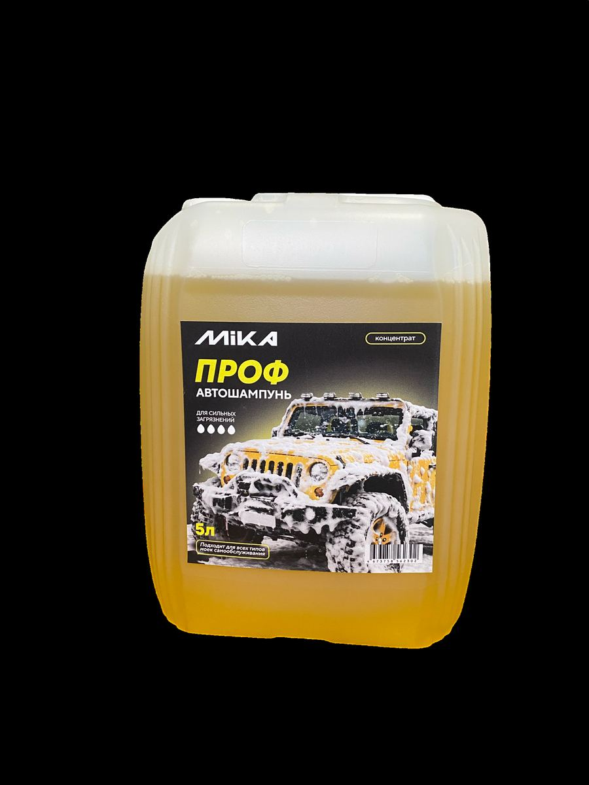
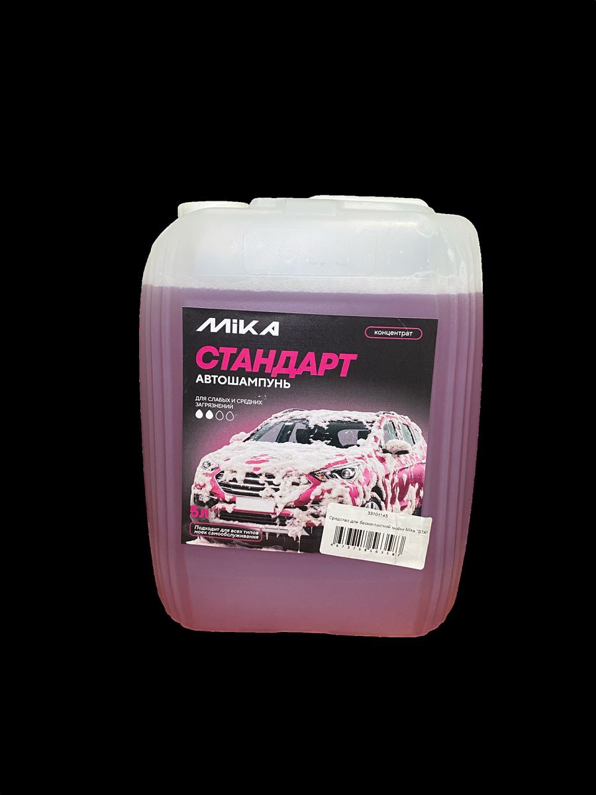
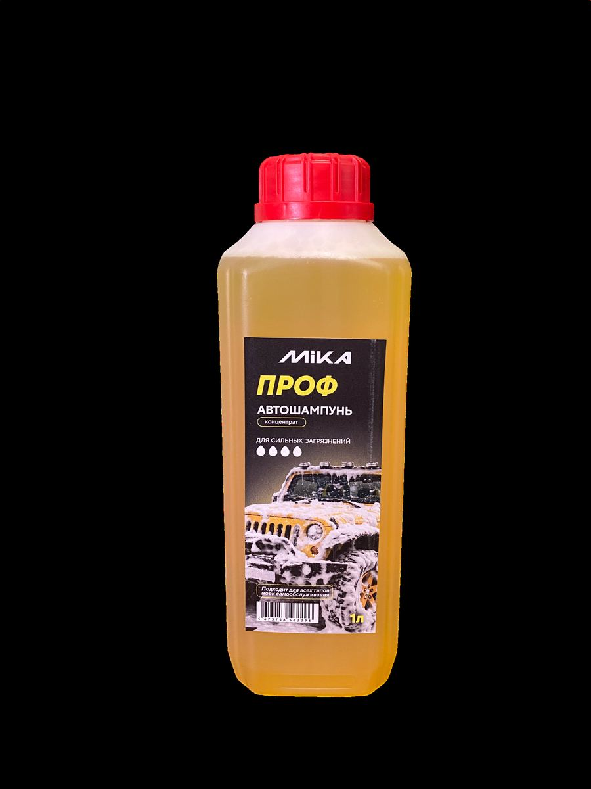

Вид СТМ · MIKA
Автохимия и теплоноситель
Линейки мойки EFFECT / Prof / STANDART и теплоносители на этилен- / пропиленгликоле.
- Бесконтактная мойка — концентрации 1 кг и 5 кг; сравнивайте задачу и «силу» линейки.
- Мыло жидкое — есть строительное (добавка) и бытовое перламутровое — не путать.
- Теплоноситель −65 этиленгликоль — системы отопления; токсичнее.
- ЭКО −30 пропиленгликоль — более «экологичный» вариант.



Тест для самоконтроля
Автохимия. Отметьте ответы и нажмите «Проверить».